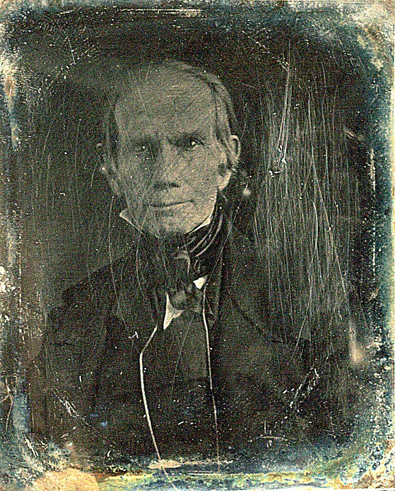
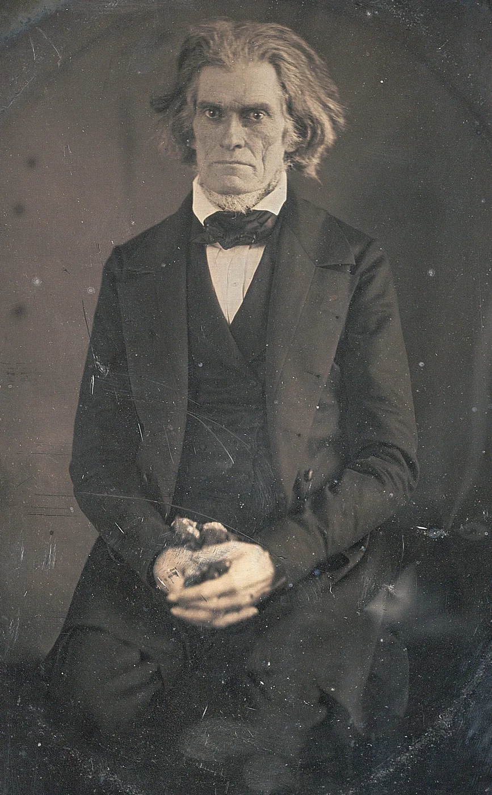
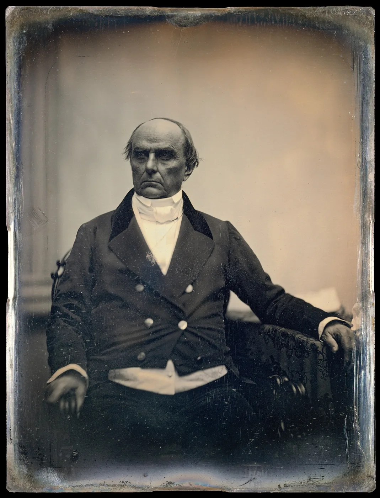
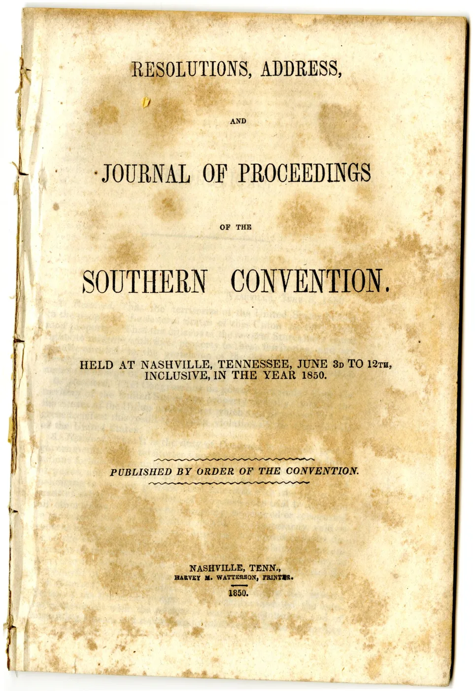
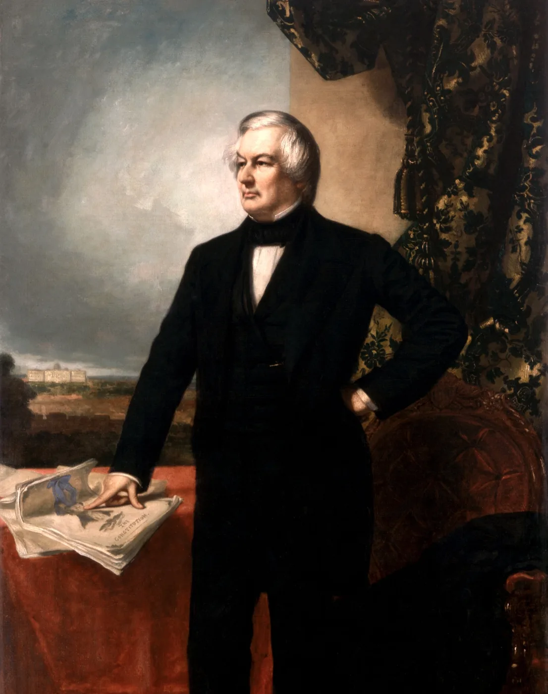
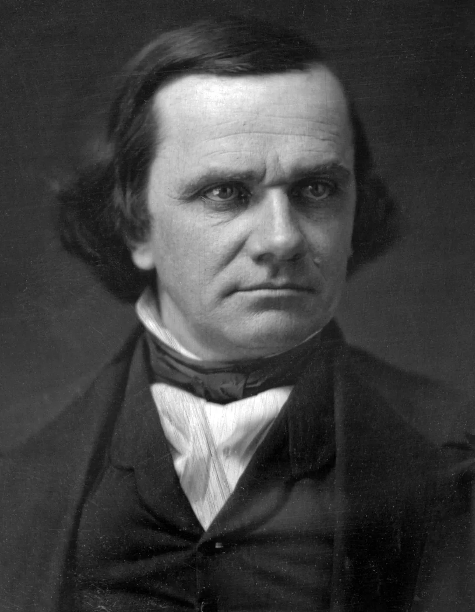
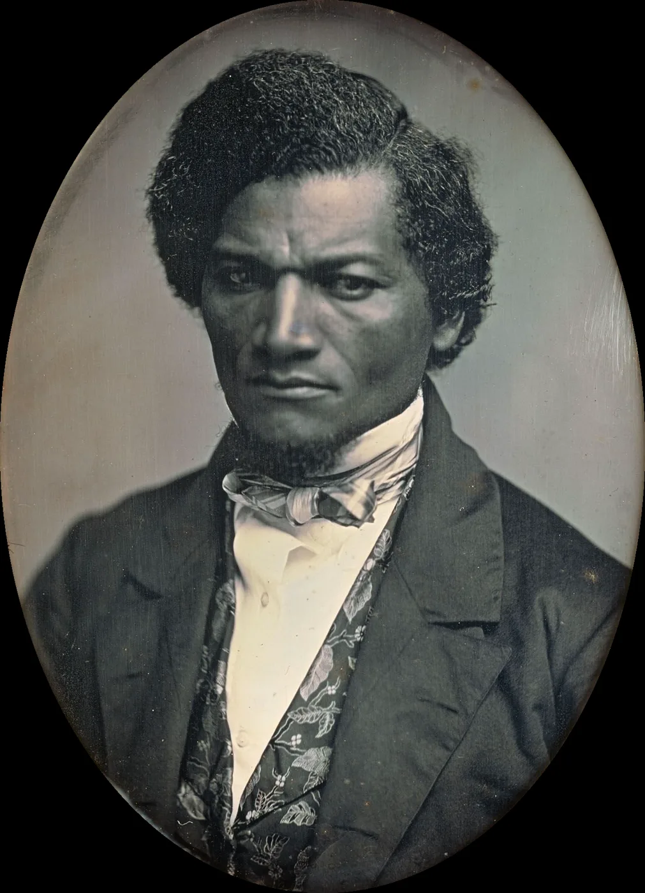
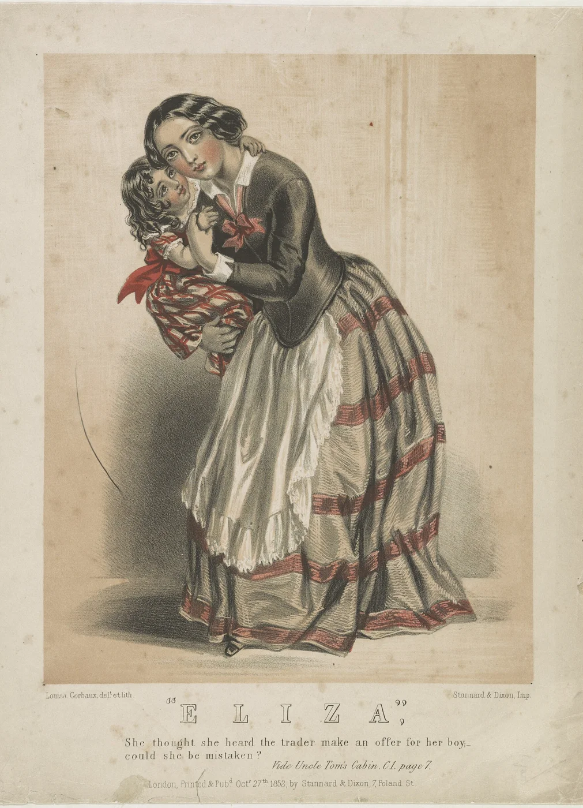
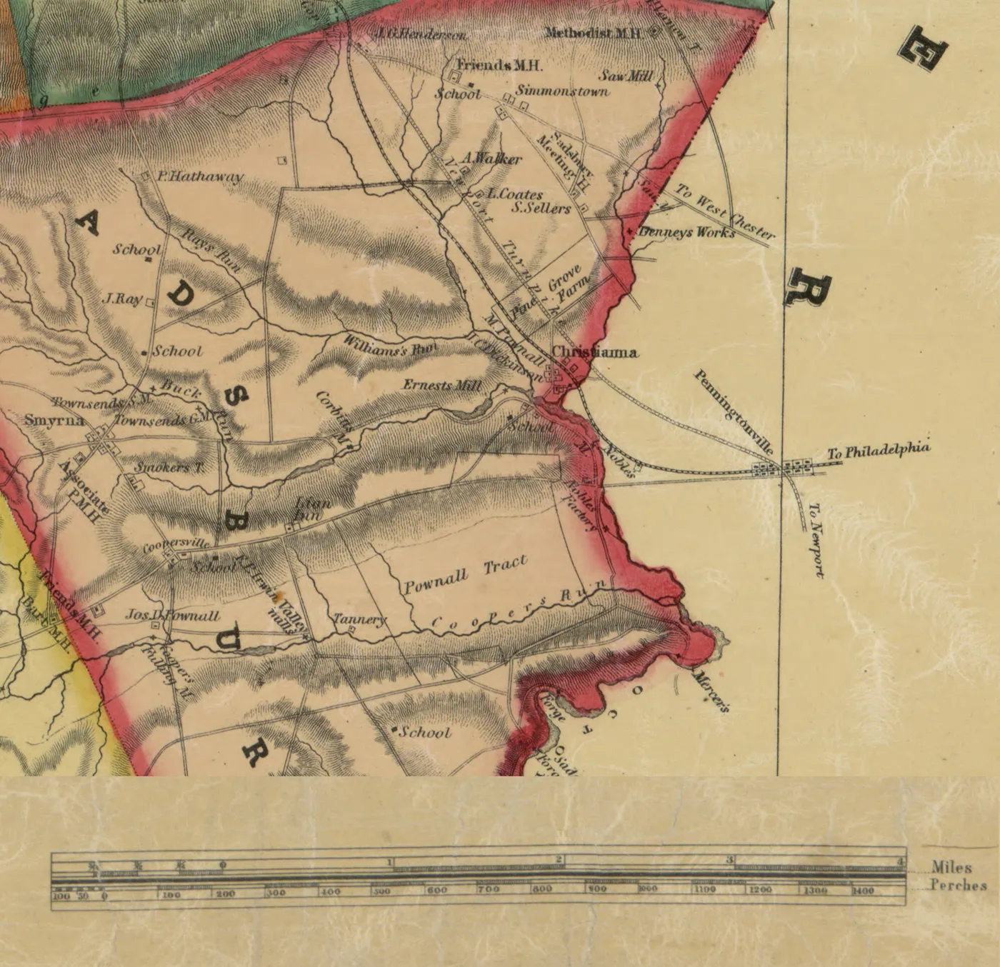
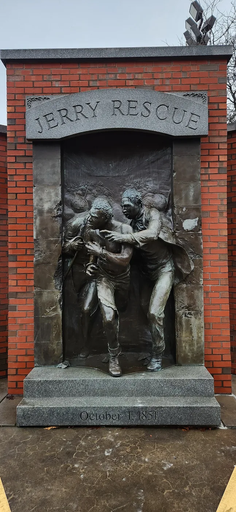

HIST 101 · U.S. History to 1877
The Compromise of 1850
After Manifest Destiny · Chapter 13

After the War You Already Know
The Treaty of Guadalupe Hidalgo (1848) transferred about 525,000 square miles; the United States paid Mexico $15 million.
- California, Nevada, Utah
- Most of Arizona; western New Mexico
- Parts of Colorado and Wyoming
The question: Would slavery be allowed in these lands?

The Wilmot Proviso (1846)
David Wilmot proposed banning slavery in any territory acquired from Mexico.
- Passed the House in 1846 and 1847
- Never passed the Senate (no vote in 1846; stripped in 1847)
- Never became law
It failed as a statute. It succeeded as a political catalyst that forced parties to take sides and crystallized free-soil politics.

The California Gold Rush
- January 1848: gold found at Sutter’s Mill
- By the end of 1849, about 100,000 newcomers had arrived
- Fall 1849: Californians wrote a constitution that banned slavery
- They skipped the territorial stage and asked to join as a state
- Almost overnight, California had become a would-be free state
Extra credit: A Gold Rush documentary is available on Canvas for extra credit.

Five Issues: California, Texas, Territories, D.C., Fugitives
By 1850, five disputes over slavery threatened to split the Union:
- California: free-state constitution, Senate balance (15 free, 15 slave)
- Texas: boundary claims + public debt
- New Mexico & Utah: organizing the rest of the Cession
- District of Columbia: slave trade in the capital
- Fugitive slaves: the 1793 law was weakened by Prigg v. Pennsylvania (1842) and Northern personal-liberty laws
Zachary Taylor’s Stand
- A slaveholder: Louisiana planter and Mexican War hero, elected in 1848 as a Whig
- Refused to bargain: he would not bundle the five issues into one compromise
- Wanted California, and later New Mexico, admitted directly as states
- When Texas threatened to seize Santa Fe, he reinforced the army there

The Great Triumvirate’s Last Debate
- Henry Clay (KY): Jan 29 resolutions; Feb 5–6 speech for compromise
- John C. Calhoun (SC): March 4 (read by James Mason), rejected it
- Daniel Webster (MA): March 7, “I speak to-day for the preservation of the Union”
“I wish to speak to-day, not as a Massachusetts man, nor as a Northern man, but as an American…”Daniel Webster, U.S. Senate, March 7, 1850



The Nashville Convention (1850)
- June 3, 1850: delegates from nine slave states met in Nashville to weigh secession
- Moderates prevailed: extend the 36°30′ line to the Pacific
- A smaller November session declared a right to secede
- The threat gave Congress a deadline

Taylor’s Death
- July 4: Taylor attended a hot ceremony at the Washington Monument
- He fell ill with a stomach illness and died on July 9, 1850
- Vice President Millard Fillmore of New York became president
- Fillmore backed compromise, and the deadlock broke

Stephen Douglas Separates the Package
- May 8: a Senate committee bundled Clay’s plan into one “omnibus” bill
- July 31: amendments stripped it apart, and the omnibus died
Clay’s single omnibus bill failed. Douglas separated it into five bills and built different majorities for each.
Five statutes signed between September 9 and September 20, 1850. Fillmore signed them after Taylor’s death.

What Congress Actually Passed
- California admitted as a free state
- New Mexico & Utah organized with no ban on slavery (popular sovereignty)
- Texas boundary settled; $10 million for its debt
- Slave trade (not slavery) abolished in DC
- New Fugitive Slave Act of 1850
Fugitive Slave Act (1850)
- Federal commissioners, not state courts
- No jury trial; alleged fugitive could not testify
- Citizens could be compelled to help; $1,000 fine and six months in jail for aiding a fugitive
- Commissioner paid $10 to send a person south, $5 to free them
Northern personal-liberty laws multiplied. Resistance radicalized moderates: Shadrach Minkins rescued (Boston, 1851); Anthony Burns returned under federal guard (1854).
Black Resistance, White Allies
- Without a jury, any free Black person could be claimed as a runaway
- Black-led vigilance committees, joined by white allies such as Theodore Parker, warned and hid people
- Black-led crowds, sometimes with white allies, rescued captives in Boston, Christiana, and Syracuse (Independent Study)
- Thousands fled to Canada, where Mary Ann Shadd urged emigration and founded a newspaper


Frederick Douglass Responds
- Escaped slavery in 1838; by 1851 he edited his own paper in Rochester
- Sheltered fugitives in Rochester on their way to Canada
- July 5, 1852: “What to the Slave Is the Fourth of July?” said the law had nationalized slavery
“By an act of the American Congress, not yet two years old, slavery has been nationalized in its most horrible and revolting form.”Frederick Douglass, Rochester, July 5, 1852

Why Uncle Tom’s Cabin Mattered
- An answer to the law: serialized from June 1851, a book on March 20, 1852
- Reach: 10,000 copies in two weeks; nearly 310,000 printed in the U.S. in about a year; over 1.5 million reportedly sold in Britain
- Law into people: a mother fleeing with her son, a man sold away from his family
- Backlash: Southern critics called it slander; in 1857 Samuel Green, a free Black Maryland minister, got ten years for owning a copy
- Harder lines: Northerners less willing to enforce the law, Southerners more sure the North was their enemy
“See to it that they feel right.”Harriet Beecher Stowe, Uncle Tom’s Cabin, “Concluding Remarks” (1852)

Continue: Lecture 4, Uncle Tom’s Cabin (Study Buddy Edition) →
Vocabulary
- Wilmot Proviso: 1846 proposal to ban slavery in territory from Mexico; never law, but sharpened sectional politics.
- Popular sovereignty: settlers in a territory decide the slavery question themselves.
- Fugitive Slave Act of 1850: federal law that strengthened recovery of alleged runaways.
- Free-soil: slavery should not expand into new territories.
- Nashville Convention: 1850 meeting of slave states that weighed secession.
- Personal-liberty laws: Northern state laws that limited help with slave-catching.
- Vigilance committee: local group that warned, hid, and moved fugitives.
What the Compromise Bought
It postponed secession. It did not settle the conflict the Wilmot Proviso had already made central.
Free states now led 16 to 15.
That gap exploded in Kansas after 1854.
Boston, Christiana, and Syracuse defied it in 1851.
Readers on both sides of the Atlantic met the law as a human story.
Today’s lecture ends here. Next: the Independent Study section.
Pierian Spring
Independent Study
Deeper context for the online hour
Today’s lecture ends here. Continue on your own: the stories below finish this chapter’s history, and a Check Yourself quiz waits at the end.
“A little learning is a dang’rous thing;
Drink deep, or taste not the Pierian spring.”Alexander Pope, An Essay on Criticism (1711)
Free soil · Shadrach Minkins, 1851 · Christiana, 1851 · The Jerry Rescue, 1851 · Anthony Burns, 1854 · Check Yourself · Sources
Independent Study · Northern politics
Free-Soil Ideology in More Detail
The Wilmot Proviso gave free-soil politics a clear legislative face. Many Northerners who rejected immediate abolition still opposed expansion of slavery into the territories on economic and political grounds.
- 1848: the Free Soil Party formed at Buffalo, New York
- Its slogan: “Free Soil, Free Speech, Free Labor, and Free Men”
- Martin Van Buren won about 10 percent of the popular vote for president
Independent Study · Boston, 1851
The Shadrach Minkins Rescue (1851)
- Minkins escaped slavery in Norfolk, Virginia, in 1850
- Feb 15, 1851: arrested at his waiter’s job and held in the federal courthouse
- Lewis Hayden and a crowd of Black Bostonians carried him out of the courtroom
- He reached Montreal; Boston juries would not convict the rescuers

Independent Study · Pennsylvania, 1851
Christiana, Pennsylvania (1851)
- Sept 11, 1851: Edward Gorsuch came for men who had fled his Maryland farm
- At William Parker’s house, armed Black farmers answered a horn and fought the posse
- Gorsuch was killed; Parker escaped to Canada with Frederick Douglass’s help
- 38 men were charged with treason; the first trial ended in acquittal

Independent Study · Syracuse, 1851
The Jerry Rescue (1851)
- Oct 1, 1851: William “Jerry” Henry, a barrel maker, was arrested
- Abolitionists in town for a convention rang church bells
- A Black and white crowd broke into the police office and freed him
- Days later he was smuggled to Kingston, Canada West

Independent Study · Boston, 1854
Anthony Burns (1854)
- May 24, 1854: Burns, who had escaped Virginia, was arrested in Boston
- May 26: a rescue attack on the courthouse failed; a deputy was killed
- June 2: as Boston watched, federal troops marched him to a ship, back to slavery in Virginia
- 1855: Boston supporters bought his freedom

Independent Study · Check Yourself
Check Yourself
Click an answer to see whether it is right, the correct answer, and why.
1. What did most free-soilers want?
2. What happened to Anthony Burns in June 1854?
Sources
Primary sources
- Wilmot Proviso votes: U.S. House of Representatives, History, Art & Archives (history.house.gov).
- Henry Clay, resolutions (Jan. 29, 1850) and speech (Feb. 5–6, 1850); U.S. Senate Historical Office, “Clay’s Last Compromise” (senate.gov).
- John C. Calhoun, speech of March 4, 1850 (read by James M. Mason).
- Daniel Webster, “The Constitution and the Union,” March 7, 1850 (Wikisource; Teaching American History).
- Fugitive Slave Act, Sept. 18, 1850, 9 Stat. 462 (Avalon Project, Yale Law School).
- Frederick Douglass, “What to the Slave Is the Fourth of July?” Rochester, July 5, 1852.
- Harriet Beecher Stowe, Uncle Tom’s Cabin (National Era, 1851–52; Boston: John P. Jewett, 1852), ch. 45, “Concluding Remarks.”
- State of Maryland v. Samuel Green, Dorchester County Court, April Term 1857; Maryland State Archives, MSA SC 3520-13785.
Scholarship and references
- David M. Potter, The Impending Crisis, 1848–1861 (1976).
- Fergus M. Bordewich, America’s Great Debate (2012).
- Stanley W. Campbell, The Slave Catchers (1970).
- Gary Collison, Shadrach Minkins (1997); Thomas P. Slaughter, Bloody Dawn: The Christiana Riot (1991).
- Albert J. von Frank, The Trials of Anthony Burns (1998).
- Joan D. Hedrick, Harriet Beecher Stowe: A Life (1994).
- Michael Winship, “‘The Greatest Book of Its Kind’: A Publishing History of Uncle Tom’s Cabin,” Proceedings of the American Antiquarian Society 109 (1999).
Images
- All images are period works in the public domain (Library of Congress, Yale Beinecke, The Met, Art Institute of Chicago, Nelson-Atkins, NYPL, Massachusetts Historical Society, Portal to Texas History, White House collection) via Wikimedia Commons, except the Mexican Cession map (Kballen, CC BY 3.0) and the Jerry Rescue Monument photo (CC0). Each slide’s caption gives its source.